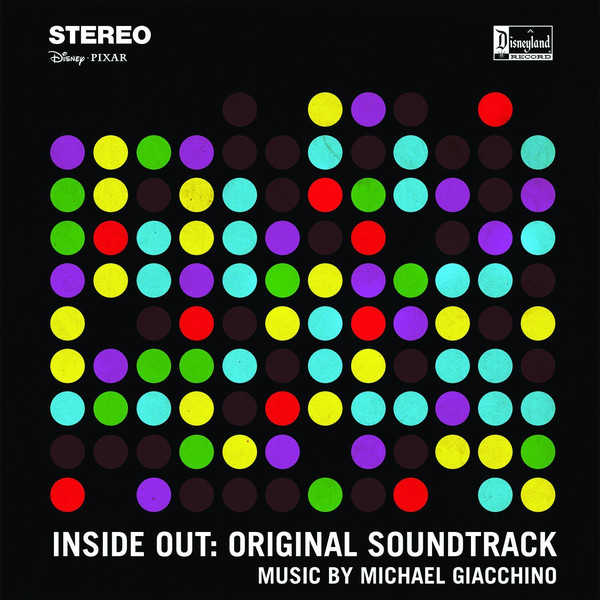

Michael Giacchino - Inside Out OST
앨범 정보
발매일
2015. 01. 01.
장르
애니메이션/웹툰,키즈,만화
발매사
Universal Music Group
기획사
Walt Disney Records
앨범 소개
인간이 느끼는 감정을 애니메이션으로 표현한 영화 '인사이드 아웃'은, 골든 글로브, 그래미 어워드 등 다양한 영화 음악상에 빛나는 '마이클 지안치노(Michael Giacchino)'가 사운드트랙 제작에 총 감독을 맡았다. 이번 '인사이드 아웃' 사운드트랙은 '마이클 지안치노'의 의도와 걸맞게 오르간, 기타와 드럼 등 총 70여개의 악기가 동원된 오케스트라가 만들어낸 아름다운 연주와 무의식의 세계를 파고드는 음악을 통해, 영화 제목처럼 안에서부터 느껴지는 진솔한 감정을 음악으로 구현하기에 충분한 앨범이다.
Track list
| No | 곡명 | 러닝타임 |
|---|---|---|
| 01 | Bundle of Joy | 2:48 |
| 02 | Team Building | 2:19 |
| 03 | Nomanisone Island/National Movers | 4:21 |
| 04 | Overcoming Sadness | 0:52 |
| 05 | Free Skating | 1:00 |
| 06 | First Day of School | 2:03 |
| 07 | Riled Up | 1:04 |
| 08 | Goofball No Longer | 1:12 |
| 09 | Memory Lanes | 1:23 |
| 10 | The Forgetters | 0:51 |
| 11 | Chasing the Pink Elephant | 1:56 |
| 12 | Abstract Thought | 1:48 |
| 13 | Imagination Land | 1:26 |
| 14 | Down in the Dumps | 1:48 |
| 15 | Dream Productions | 1:44 |
| 16 | Dream a LIttle Nightmare | 1:51 |
| 17 | The Subconscious Basement | 2:02 |
| 18 | Escaping the Subconscious | 2:10 |
| 19 | We Can Still Stop Her | 2:55 |
| 20 | Tears of Joy | 3:40 |
| 21 | Rainbow Flyer | 2:59 |
| 22 | Chasing Down Sadness | 1:46 |
| 23 | Joy Turns to Sadness/A Growing Personality | 7:49 |
| 24 | The Joy of Credits | 8:19 |